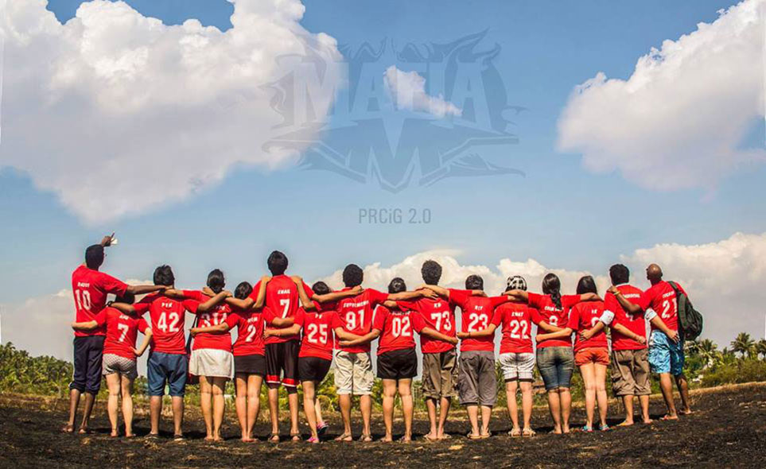
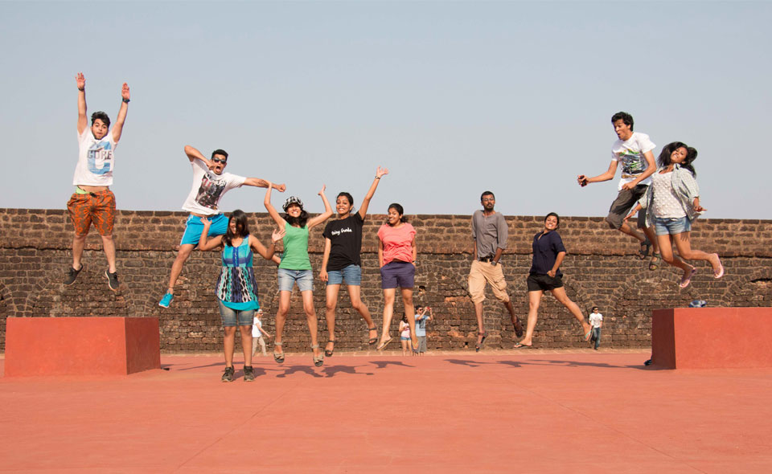
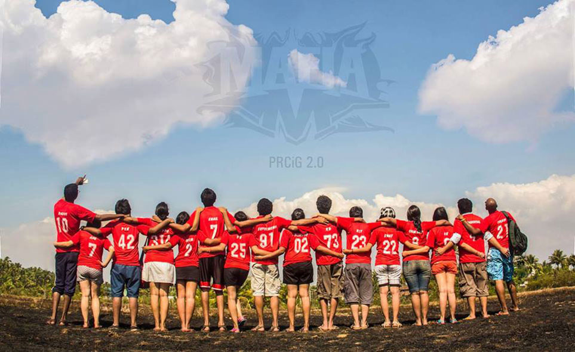
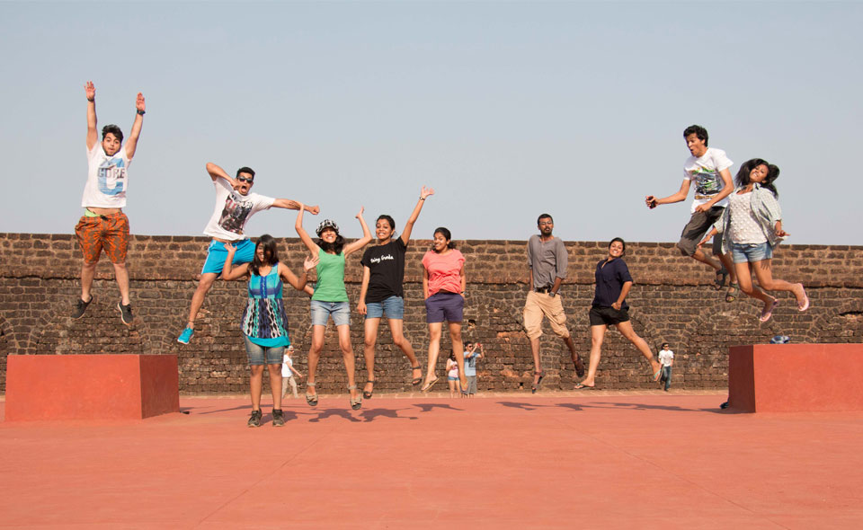

MAKING CAMPAIGNS YOU CAN'T REFUSE
WHO WE ARE
A team of passionate people who limits to do things the world can't refuse.
2012
They say that the greatest ideas come from the simplest questions, hitherto unanswered. In 2012, someone threw such a simple question, "Why do we never celebrate MAD's birthday?" It was then that Mafia took charge and MAD Week was born. The idea was to celebrate our birthday with everyone and spread some happiness. Why? Because Happiness is Contagious, of course! A tide of hugs, hi5s, smiles, laughter and a whole lot of happiness has swept the nation since then. With every year as MAD grows, our circle of happiness grows a little bit wider.
2013
Soon after the commencement of the 2013 session, Anish Bhattacharya, Mafia from Vellore struck upon what sounded like a seemingly insane idea. He wanted to organise a campaign, with people walking...backwards. The idea, he said, was to push back illiteracy. After it was floored in Vellore, a few quick Whatsapp conversations followed and MafIIa decided to unitedly Push Back Illiteracy on September 8th, World Literacy Day. As the first rays of the sun touched the skies, Vizag kickstarted what went on to become a movement. All 23 cities since then have taken up the pledge to #MoveForward
2014
We realised that we were growing. With the blink of an eyelid, MAD had spread to different corners of the city. The need of the moment was to stay united. In this crusade that we had undertaken to provide our children with equal outcomes, we had to hold on to each other, hand in hand. Unitedly, as One Big MAD. It dawned on us then-everything we do, what we have done and what will go on to do, depends on us. That it starts with us. Without the people, we are nothing. MAD will always be what it is for the people. Thus was born the recruitment campaign was 2014 #ItStartsWithUs. And indeed, it does.
Why We Do What We Do
Because Saving the World is Never Done Alone.
The Desire to Constantly Push the Limits.
BECAUSE WE CAN!
The campaigns. To me, it triggered a spark such that I could finally align my career path with what I loved doing. I believe campaigns are the biggest form of collective expression and to me, it opened up a platform to work with like minded people to build such campaigns and I cherished every moment of it. It was like getting into a room with 20 other mafiosis and a mic and screaming out to the rest of the world, the voice of the brand. I guess it was just that simple.
Cheers to another year of making campaigns the world can't refuse. :)
- Anish Bhattacharya
MAFIA. One word that brings in hosts of memories, transcendental experiences, lifelong relationships, to my mind. It is an experience which has fueled my creative storage into a booming spectrum, where everything seems possible, doing every shit. And doing it with superb refine-ness. Mafia has helped me grow as a person and has acted as a complete support system in all times. It is my family which has trusted me immensely and has boosted me to achieve the far away success. Where I can also burn everyone left right and centre with my sarcasm, and still be loved for who I am. I louve you all. <3 And I hope to carry forwards this spirit because, Once a Mafia, always a Mafia. Ps- Somebody needs to be a good teacher and teach me 'Your mom' jokes :/
- Sanjeetha Singh
For me, Mafia is much more than just the PR vertical of MAD. Initially, I was excited to meet so many new people from around the country. But as time passed, we became so close to each other that when you suddenly turn back, you see that Mafia has become your extended family. Always there to help each other, no matter what. Not letting each other down and always being there for each other. And ofcourse, all the amazing work and fun!Mafia is love. Mafia is family. Mafia is brotherhood. :) "
- Anirudh Rayasam
Mafia, it is a legacy of like minded people trying to give 'Make A Difference' the attention it deserves, a family of individuals who have supported me during my failures, have shared the happiness of my achievements and have been an integral part of my life changing experience as a Public Relations fellow. Mafia is a group of people who aim high, walk the extra mile to reach their aim, does something as unique as BackaThon to tell the world that MAD is here to push illiteracy back, reminds everyone that happiness is contagious, that we are a #OneBigMad family and #ItStartsWithUs, Mafia takes brand guidelines as their religion, considers it blasphemy when somebody violates it (specially when anyone calls MAD Red as Pink) and are humble when they achieve their goals but at the same time stay pro-failure. There is so much I can write for Mafia but for now let me just say, Once a Mafia, always a Mafia. Mafias of the Older generations, Mafias of my generation and the Mafias of the next generation, let's keep making campaigns which nobody can refuse!
- Mihir Tandon
MAFIA. One word that brings in hosts of memories, transcendental experiences, lifelong relationships, to my mind. It is an experience which has fueled my creative storage into a booming spectrum, where everything seems possible, doing every shit. And doing it with superb refine-ness. Mafia has helped me grow as a person and has acted as a complete support system in all times. It is my family which has trusted me immensely and has boosted me to achieve the far away success. Where I can also burn everyone left right and centre with my sarcasm, and still be loved for who I am. MAFIA to me is happiness. Sheer happiness. Where unrelated individuals come together to become a strong family. Thank for everything, everyone. Each one of you is fundamental to my growth, in the last one year. I louve you all. <3 And I hope to carry forwards this spirit because, Once a Mafia, always a Mafia. Ps- Somebody needs to be a good teacher and teach me 'Your mom' jokes :/
- Sanjeetha Singh
Mafia, It is a legacy of like minded people trying to give 'Make A Difference' the attention it deserves, a family of individuals who have supported me during my failures, have shared the happiness of my achievements and have been an integral part of my life changing experience as a Public Relations fellow. Mafia is a group of people who aim high, walk the extra mile to reach their aim, does something as unique as BackaThon to tell the world that MAD is here to push illiteracy back, reminds everyone that happiness is contagious, that we are a #OneBigMad family and #ItStartsWithUs, Mafias take brand guidelines as their religion, considers it blasphemy when somebody violates it (specially when anyone calls MAD Red as pink) and are humble when they achieve their goals but at the same time stay pro-failure. There is so much I can write for Mafia but for now let me just say, Once a Mafia, always a Mafia. Mafias of the Older generations, Mafias of my generation and the Mafias of the next generation, let's keep making campaigns which nobody can refuse!
- Mihir Tandon
 


